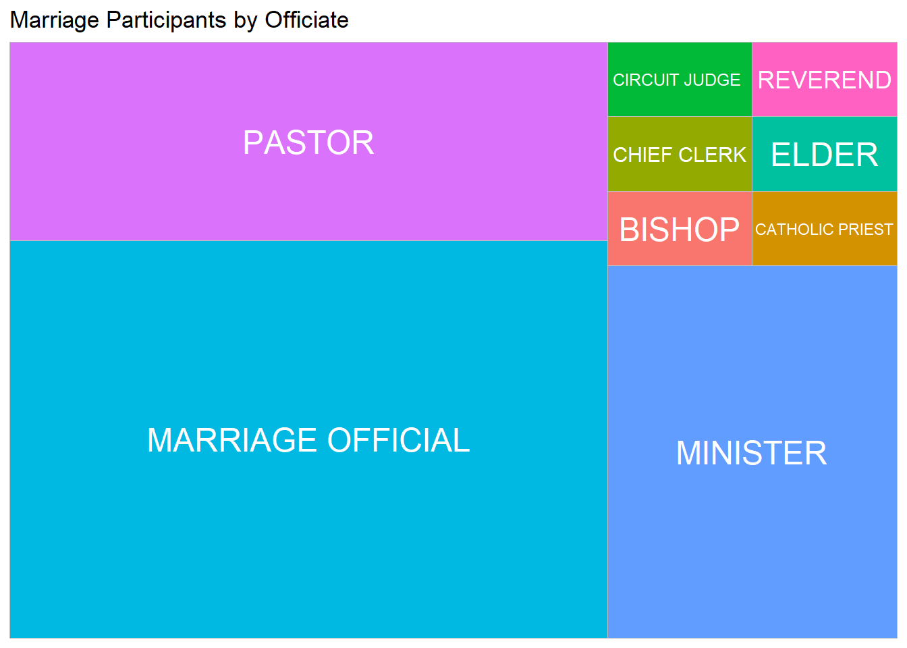
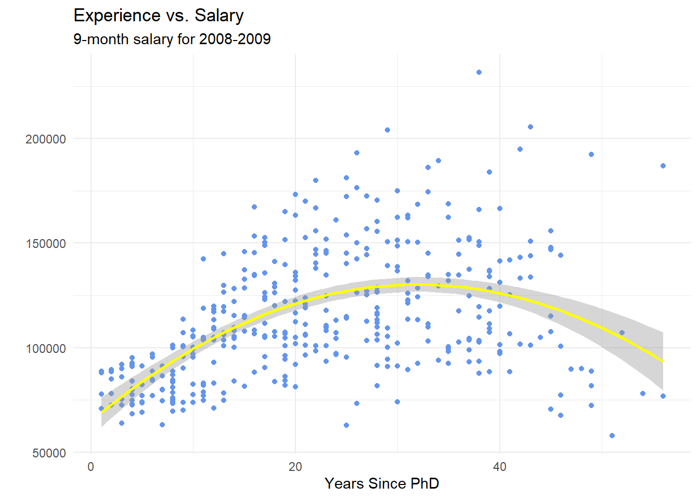
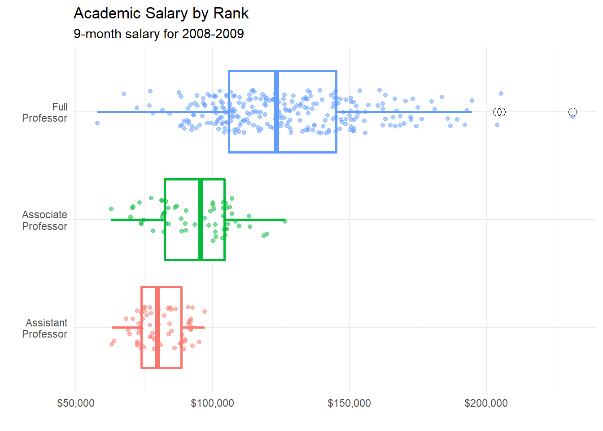

Chapter 7 Visualisasi Data
Visualisasi data adalah teknik mengambil informasi dari data ke dalam konteks visual, seperti bagan, grafik, dan peta. Visualisasi data membuat data yang besar dan kecil menjadi lebih mudah dimengerti oleh otak manusia, dan visualisasi juga membuat kumpulan data menjadi lebih dapat diandalkan untuk mendeteksi pola, tren, dan pencilan (outliers).
R adalah platform yang luar biasa untuk menganalisis data, mampu membuat hampir semua jenis grafik. Buku ini membantu Anda untuk membuat visualisasi yang paling populer - dari plot cepat dan tidak beraturan hingga grafik yang siap dipublikasikan. Di sini kita akan belajar bagaimana memvisualisasikan data dari poin-poin berikut:
7.1 Data Univariat
Plot univariat biasanya digunakan untuk melakukan distribusi data dari satu variabel. Variabelnya dapat berupa kategorikal(misalnya, jenis kelamin, ras, negara, kota, dll) atau kuantitatif (misalnya, umur, berat, inflasi, nilai, dll).
7.1.1 Kategorikal
Distribusi variabel kategorikal tunggal biasanya diplot dengan diagram batang, diagram lingkaran, atau (lebih jarang) peta pohon.
Diagram Batang
Berikut ini adalah contoh yang menunjukkan frekuensi dari dataset Marriage, Saya mendapatkannya dari package mosaicData. Kita gunakan diagram batang untuk menampilkan distribusi peserta pernikahan berdasarkan Zodiak.
library(ggplot2) # untuk visualisasi
#setwd("C:/Users/Bakti/Desktop/") # jangan lupa mengatur working directory
Marriage<- read.csv("Data/Marriage.csv") # memauat data dari PC Anda`
ggplot(Marriage, aes(x = zodiacs)) + # memplot distribusi dari `Zodiacs`
geom_bar(fill = "cornflowerblue",
color= "azure4") + # Anda dapat mengganti warna
theme_minimal() + # menggunakan tema minimal
labs(x = "Zodiacs", # Anda dapat mengganti label dan judul plot
y = "Frequency",
title = "Marriage Participants by Zodiacs") 
Batang pada diagram batang dapat menggambarkan persentase dari jumlah. Untuk diagram batang (zodiak), kode aes(x=sign) biasanya merupakan jalan pintas untuk aes(x = sign, y = ..count..), di mana ..count.. adalah variabel khusus yang menggambarkan frekuensi dari setiap kategori. Anda dapat menggunakan ini untuk menghitung persentase, dengan menentukan variabel y secara eksplisit.
library(ggplot2) # untuk visualisasi
ggplot(Marriage,
aes(x = zodiacs,
y = ..count.. / sum(..count..))) +
geom_bar(fill = rainbow(12), color= "azure4") +
theme_minimal() + # menggunakan tema minimal
labs(x = "Zodiacs",
y = "Percent",
title = "Marriage Participants in Percent") +
scale_y_continuous(labels = scales::percent) # menambahkan simbol % untuk label sumbu y Catatan: Dalam R, warna dapat ditentukan dengan nama (misalnya col= "red") atau dengan triplet RGB heksadesimal (seperti col = "#FFCC00"). Anda juga dapat menggunakan sistem warna lain seperti salah satunya diambil dari package RColorBrewer.Lebih lanjut
Mengurutkan batang berdasarkan frekuensi sering kali membantu. Pada kode di bawah ini, frekuensi dihitung secara eksplisit. Kemudian fungsi reorder digunakan untuk mengurutkan kategori berdasarkan frekuensinya. Opsi stat="identity" memberitahu fungsi plot untuk tidak menghitung jumlah, karena mereka diberikan secara langsung.
##
## Attaching package: 'dplyr'## The following objects are masked from 'package:stats':
##
## filter, lag## The following objects are masked from 'package:base':
##
## intersect, setdiff, setequal, unionlibrary(ggplot2) # untuk visualisasi
plotdata <- Marriage %>% # memuat dataset
count(zodiacs) # jumlah peserta di setiap 'zodiacs'
# menyusun plot batang secara meningkat
ggplot(plotdata,
aes(x = reorder(zodiacs, n),
y = n)) +
geom_bar(stat = "identity",
fill = rainbow(12),
color= "azure4") +
theme_minimal() + # menggunakan tema minimal
labs(x = "Zodiacs",
y = "Frequency",
title = "Sorting Categories")Jika Anda mungkin ingin memberi label untuk setiap batang dengan nilai numeriknya, ikuti kode berikut:
library(dplyr) # untuk manipulasi data
library(ggplot2) # untuk visualisasi
library(scales) # menentukan jeda atau label secara otomatis
plotdata <- Marriage %>%
count(zodiacs) %>%
mutate(pct = n / sum(n),
pctlabel = paste0(round(pct*100), "%"))
# plot batang sebagai persentase, dalam urutan menurun dengan label batang
ggplot(plotdata,
aes(x = reorder(zodiacs, -pct),
y = pct)) +
geom_bar(stat = "identity",
fill = rainbow(12),
color = "azure4") +
geom_text(aes(label = pctlabel),
vjust = -0.25) +
theme_minimal() + # menggunakan tema minimal
scale_y_continuous(labels = percent) +
labs(x = "Zodiacs",
y = "Percent",
title = "Labeling Bars")Terkadang label kategori mungkin tumpang tindih, ini sangat mengganggu buka? Jadi, Anda dapat memutar label sumbu.
library(ggplot2) # untuk visualisasi
library(scales) # menentukan jeda atau label secara otomatis
# memplot batang sebagai persentase, dalam urutan menurun dengan label batang
ggplot(plotdata,
aes(x = reorder(zodiacs, -pct),
y = pct)) +
geom_bar(stat = "identity",
fill = rainbow(12),
color = "azure4") +
geom_text(aes(label = pctlabel),
vjust = -0.25) +
scale_y_continuous(labels = percent) +
theme_minimal() + # menggunakan tema minimal
labs(x = "Zodiacs",
y = "Percent",
title = "Overlapping Labels")+
theme(axis.text.x = element_text(angle = 45, hjust = 1))Cara lainnya, Anda dapat menangani situasi ini dengan membalik sumbu x dan y.
library(ggplot2) # untuk visualisasi
library(scales) # menentukan jeda atau label secara otomatis
# memplot batang sebagai persentase, dalam urutan menurun dengan label batang
ggplot(plotdata,
aes(x = reorder(zodiacs, -pct),
y = pct)) +
geom_bar(stat = "identity",
fill = rainbow(12),
color = "azure4") +
geom_text(aes(label = pctlabel),
hjust = -0.10) +
scale_y_continuous(labels = percent) +
theme_minimal() + # menggunakan tema minimal
labs(x = "Zodiacs",
y = "Percent",
title = "Overlapping Labels")+
coord_flip()Diagram Pai
Diagram pai bersifat kontroversial di statistik. Jika tujuan Anda adalah membandingkan frekuensi dari kategori, lebih baik Anda menggunakan diagram batang (orang-orang lebih baik dalam menilai panjang batang dari pada volume irisan lingkaran). Jika tujuan Anda untuk membandingkan setiap kategori secara keseluruhan (misalnya berapa porsi partisipan yang merupakan Hispanik (orang Spanyol) dibandingkan dengan semua partisipan), dan jumlah kategorinya kecil, maka diagram pai mungkin cocok untuk Anda. Dibutuhkan sedikit lebih banyak kode untuk membuat diagram pai lebih menarik dalam R.
Ini adalah contoh untuk membuat diagram pai sederhana dengan ggplot2:
library(dplyr) # untuk memanipulasi data
library(ggplot2) # untuk visualisasi
library(scales) # menentukan jeda atau label secara otomatis
# Persiapan data
plotdata <- Marriage %>%
count(race) %>%
arrange(desc(race)) %>%
mutate(prop = round(n*100/sum(n), 1),
lab.ypos = cumsum(prop) - 0.5*prop)
# Membuat diagram pai
mycols <- c("#0073C2FF", "#EFC000FF", "#868686FF", "#CD534CFF")
ggplot(plotdata, aes(x = "", y = prop, fill = race)) +
geom_bar(width = 1, stat = "identity", color = "white") +
coord_polar("y", start = 0)+
geom_text(aes(y = lab.ypos, label = prop), color = "white")+
scale_fill_manual(values = mycols) +
theme_void()+
labs(title = "Marriage Participants by Race")Diagram donat hanyalah diagram pai sederhana dengan lubang di dalamnya. Satu-satunya perbedaan antara kode diagram pai adalah kita menetapkan: x = 2 dan xlim = c(0.5, 2.5) untuk membuat lubang di dalam diagram pai. Selain itu, argumen width dalam fungsi geom_bar() tidak lagi diperlukan.
library(ggplot2) # untuk visualisasi
library(scales) # menentukan jeda atau label secara otomatis
# membuat diagram donat
ggplot(plotdata, aes(x = 2, y = prop, fill = race)) +
geom_bar(stat = "identity", color = "white") +
coord_polar(theta = "y", start = 0)+
geom_text(aes(y = lab.ypos, label = prop), color = "white")+
scale_fill_manual(values = mycols) +
theme_void()+
xlim(0.5, 2.5)+
labs(title = "Marriage Participants by Race")Sekarang mari berkreasi dan menambahkan label, sambil menghapus legend.
library(ggplot2) # untuk visualisasi
library(scales) # menentukan jeda atau label secara otomatis
# tambahkan label persen
plotdata$percent <- paste0(plotdata$race, "\n",
round(plotdata$prop), "%")
# membuat diagram donat dalam persen
ggplot(plotdata, aes(x = 2, y = prop, fill = race)) +
geom_bar(stat = "identity", color = "white") +
coord_polar(theta = "y", start = 0)+
geom_text(aes(y = lab.ypos, label = percent), color = "white")+
scale_fill_manual(values = mycols) +
theme_void()+
xlim(0.5, 2.5)+
labs(title = "Marriage Participants by Race")
Peta Pohon
Sebuah alternatif untuk diagram pai adalah peta phon. Tidak seperti diagram pai, peta pohon dapat menangani variabel kategorikal yang memiliki banyak tingkatan.
library(ggplot2) # untuk visualisasi
library(treemapify) # untuk visualisasi
library(scales) # menentukan jeda atau label secara otomatis
plotdata <- Marriage %>%
count(officialTitle)
ggplot(plotdata,
aes(fill = officialTitle,
area = n)) +
geom_treemap() +
labs(title = "Marriage Participants by Officiate")Berikut ini adalah versi yang lebih berguna dengan label.
ggplot(plotdata,
aes(fill = officialTitle,
area = n,
label = officialTitle)) +
geom_treemap() +
geom_treemap_text(colour = "white",
place = "centre") +
labs(title = "Marriage Participants by Officiate") +
theme(legend.position = "none")
7.1.2 Kontinu
Distribusi variabel kuantitatif tunggal biasanya diplot dengan histogram, plot densitas kernel, atau plot titik.
Histogram
Menggunakan dataset Marriage, mari kita plot usia dari peserta pernikahan.
library(ggplot2) # untuk visualiSaSi
ggplot(Marriage, aes(x = age)) +
geom_histogram(fill = "cornflowerblue",
color = "white",bins = 20) +
theme_minimal() + # menggunakan tema minimal
labs(title="Marriage Participants by age (Basic)",
x = "Age")
Sebagian besar peserta tampaknya berusia 20-an tahun dengan kelompok lain berusia 40-an tahun, dan kelompok yang lebih kecil berusia 60-an dan 70-an tahun. Ini akan menjadi distribusi multimodal. Warna histogram dapat diganti menggunakan dua opsi:
- fill - warna isi untuk batang.
- color - warna batas di sekitar batang.
Cara lainnya adalah Anda dapat menggunakan binwidth, lebar nampan yang diwakili oleh batang.
library(ggplot2) # untuk visualisaSi
library(scales) # menentukan jeda atau label secara otomatis
ggplot(Marriage,
aes(x = age,
y= ..count.. / sum(..count..))) +
geom_histogram(fill = "cornflowerblue",
color = "white",
binwidth = 5) +
theme_minimal() + # menggunakan tema minimal
labs(title="Marriage Participants by age (Alternative Bins and bandwidths)",
y = "Percent",
x = "Age") +
scale_y_continuous(labels = percent)Seperti diagram batang, sumbu y dapat mewakili jumlah atau persen dari total.
library(ggplot2) # untuk visualisasi
library(scales) # menentukan jeda atau label secara otomatis
ggplot(Marriage,
aes(x = age,
y= ..count.. / sum(..count..))) +
geom_histogram(fill = "cornflowerblue",
color = "white",
binwidth = 5) +
theme_minimal() + # menggunakan tema minimal
labs(title="Marriage Participants by age (Percent)",
y = "Percent",
x = "Age") +
scale_y_continuous(labels = percent)Plot Densitas Kernel
Alternatif untuk histogram adalah plot densitas Kernel. Secara teknis, perkiraan densitas kernel adalah metode non-parametrik untuk memperkirakan fungsi densitas probabilitas dari variabel acak kontinu. (Apa??) Pada dasarnya, kita mencoba untuk menggambar histogram yang diperhalus, di mana area di bawah kurva sama dengan satu.
library(ggplot2) # untuk visualisaSi
ggplot(Marriage, aes(x = age)) +
geom_density(fill = "indianred3") +
theme_minimal() + # menggunakan tema minimal
labs(title = "Marriage Participants by age")
Grafik menunjukkan distribusi dari nilai. Sebagai contoh, perbandingan kasus antara 20 dan 40 tahun akan diwakili oleh area di bawah kurva antara 20 dan 40 pada sumbu x. Seperti diagram sebelumnya, kita juga dapat menggunakan fill dan color untuk menentukan warna isian dan batasannya.
Parameter Penghalusan (Smoothing)
Tingkat kehalusan dikontrol oleh parameter bandwidth bw. Untuk menemukan nilai default untuk variabel tertentu, gunakan fungsi bw.nrd0. Nilai yang lebih besar akan menghasilkan penghalusan yang lebih banyak, sedangkan nilai yang lebih kecil akan menghasilkan penghalusan yang lebih sedikit.
library(ggplot2) # untuk visualisaSi
bw.nrd0(Marriage$age) # default bandwidth untuk variabel usia
ggplot(Marriage, aes(x = age)) +
geom_density(fill = "deepskyblue",
bw = 1) +
theme_minimal() + # menggunakan tema manual
labs(title = "Participants by age",
subtitle = "bandwidth = 1")Plot densitas kernel memungkinkan Anda dengan mudah melihat skor mana yang paling sering dan mana yang relatif jarang. Namun sulit untuk menjelaskan arti sumbu y kepada seorang non-ahli statistik. (Tapi itu akan membuatmu terlihat sangat pintar!)
Diagram Titik
Alternatif lain untuk histogram adalah diagram titik. Sekali lagi, variabel kuantitatif dibagi menjadi beberapa kelompok, tetapi bukan berbentuk batang, setiap pengamatan ditentukan oleh sebuah titik. Secara default, lebar dari sebuah titik sama dengan lebar bin, dan titik-titik bertumpuk, dengan setiap titik mewakili satu pengamatan. Ini bekerja dengan baik jika jumlah pengamatan kecil (katakanlah, kurang dari 150). Opsi fill dan color dapat digunakan untuk menentukan warna isian dan batasan masing-masing titik.
library(ggplot2) # untuk visualiSasi
ggplot(Marriage, aes(x = age)) +
geom_dotplot(fill = "gold",
color = "azure4",
binwidth = 2) +
theme_minimal() + # menggunakan tema minimal
labs(title = "Participants by age",
y = "Proportion",
x = "Age")Ada lebih banyak pilihan yang tersedia. Klik di sini untuk detail dan contoh.
7.2 Data Bivariat
Grafik bivariat menunjukkan hubungan antara dua variabel. Jenis grafik akan tergantung pada tingkat pengukuran dari variabel (kategorikan atau kuantitatif).
7.2.1 Kategorikal vs. Kategorikal
Diagram Batang Bertumpuk
Mari kita plot hubungan antara kelas mobil dan jenis penggerak (roda depan, roda belakang, atau penggerak 4 roda) untuk mobil dalam dataset Fuel economy.
library(ggplot2) # untuk visualisasi
mpg$drv<-factor(mpg$drv,
levels = c("f", "r", "4"),
labels = c("front-wheel", "rear-wheel", "4-wheel"))
# diagram batang bertumpuk
ggplot(mpg,
aes(x = class,
fill = drv)) +
geom_bar(position = "fill") +
theme_minimal() + # menggunakan tema minimal
labs(y = "Proportion")Diagram Batang yang Dikelompokkan
Tempat diagram batang yang dikelompokkan untuk variabel kategori kedua secara berdampingan. Untuk membuat plot batang yang dikelompokkan, gunakan opsi position = "single". Perhatikan bahwa opsi ini hanya tersedia di versi pengembangan terbaru ggplot2, tetapi akan segera tersedia secara umum.
Diagram Batang Tersegmentasi
Plot batang yang tersegmentasi merupakan plot batang yang bertumpuk di mana setiap batang mewakili 100 persen. Anda dapat membuat diagram batang tersegmentasi menggunakan opsi position = "filled". Jenis plot ini sangat berguna jika tujuannya adalah untuk membandingkan persentasi dari kategori dalam satu variabel di setiap tingkat variabel lain. Sebagai contoh, proporsi mobil dengan penggerak roda depan (front-wheel) meningkat saat Anda memindahkan dari mobil penumpang yang kecil, ke menengah, ke minivan.
library(dplyr) # untuk manipulasi data
library(ggplot2) # untuk visualisasi
library(scales) # menentukan jeda atau label secara otomatis
# membuat ringkasan dataset (manipulasi data)
plotdata <- mpg %>%
group_by(class, drv) %>%
dplyr::summarize(n = n()) %>%
mutate(pct = n/sum(n),
lbl = scales::percent(pct))## `summarise()` regrouping output by 'class' (override with `.groups` argument)# membuat diagram batang tersegmentasi
# menambahkan label untuk setiap segmen
ggplot(plotdata,
aes(x = factor(class),
y = pct,
fill = factor(drv))) +
geom_bar(stat = "identity",
position = "fill") +
scale_y_continuous(breaks = seq(0, 1, .2),
label = percent)+
geom_text(aes(label = lbl),
size = 3,
position = position_stack(vjust = 0.5)) +
scale_fill_brewer(palette = "Set2") +
theme_minimal() + # menggunakan tema minimal
labs(y = "Percent",
fill = "Drive Train",
x = "Class",
title = "Automobile Drive by Class") +
theme_minimal()Catatan: Anda dapat menggunakan opsi tambahan untuk meningkatkat warna dan pelabelan. Dalam grafik di bawah ini:
factormengubah urutan dari kategori untuk variabel kelas dan urutan sertalabelsuntuk variabel drive.scale_y_continuousmengubah label tanda centang sumbu y.labsmenyediakan judul dan mengubah label untuk sumbu x dan y dan juga legend.scale_fill_brewermengubah skema warna isian.theme_minimalmenghapus latar belakang abu-abu dan mengubah warna kisi.
Fungsi lainnya dibahas lebih lengkap pada Bab Visualisasi Data Lanjutan.
Plot Mosaik
Diagram mosaik dapat menampilkan hubungan antara variabel kategorikal menggunakan persegi panjang yang luasnya mewakili proporsi kejadian untuk kombinasi level tertentu. Warna ubin juga dapat menunjukkan tingkat hubungan antar variabel.
Meskipun plot mosaik dapat dibuat dengan ggplot2 menggunakan package ggmosaic, saya merekomendasikan menggunakan package vcd sebagai gantinya. Meskipun tidak akan membuat grafik ggplot2, package tersebut memberikan pendekatan yang lebih komprehensif untuk memvisualisasikan data kategorikal.
Orang-orang terpesona dengan Titanic (atau terpesona dengan Leo?). Dalam bencana Titanic, peran apa yang dimainkan oleh sex dan class dalam survival? Kita dapat memvisualisasikan hubungan antara ketiga variabel kategorikal menggunakan kode berikut.
# membuat tabel
tbl <- xtabs(Freq ~ Survived + Class + Sex, Titanic)
ftable(tbl)
# membuat plot mosaik dari tabel
library(vcd)## Loading required package: gridUkuran ubin sebanding dengan persentase kasus dalam kombinasi tingkat tersebut. Jelas lebih banyak penumpang yang tewas daripada yang selamat. Mereka yang tewas adalah penumpang laki-laki kelas 3 dan kru laki-laki (kelompok yang terbesar).
Jika kita mengasumsikan bahwa ketiga variabel ini tidak bergantung, kita dapat memeriksa residual dari model dan memberi bayangan pada ubin agar sesuai. Pada grafik di bawah, biru gelap mewakilkan lebih banyak kasus dari yang diharapkan tidak terikat. Merah tua mewakili lebih sedikit kasus dari yang diharapkan jika berlaku tidak terikat.
mosaic(tbl,
shade = TRUE,
legend = TRUE,
labeling_args = list(set_varnames = c(Sex = "Gender",
Survived = "Survived",
Class = "Passenger Class")),
set_labels = list(Survived = c("No", "Yes"),
Class = c("1st", "2nd", "3rd", "Crew"),
Sex = c("F", "M")),
main = "Titanic data")Kita dapat melihat jika class, gender, dan survival adalah tidak terikat, kita melihat lebih banyak kru laki-laki yang tewas, dan peremupan kelas 1, 2, dan 3 bertahan hidup daripada yang diharapkan. Sebaliknya, jauh lebih sedikit penumpang kelas 1 (laki-laki dan perempuan) yang meniggal daripada yang diperkirakan secara kebetulan. Dengan demikian asumsi tidak terikat ditolak.
7.2.2 Kontinu vs. Kontinu
Hubungan antara dua variabel kuantitatif biasanya ditampilkan menggunakan plot sebaran dan grafik garis.
Plot Sebaran
Plot Sebaran dibuat untuk mempelajari hubungan antara 2 variabel. Sehingga sering disertai dengan perhitungan koefisien korelasi, yang biasanya mencoba untuk mengukur hubungan linear. Namun jenis hubungan lain dapat dideteksi menggunakan plot sebaran, dan tugas umum terdiri dari menyesuaikan model yang menjelaskan Y dalam fungsi X. Berikut adalah beberapa pola yang dapat Anda deteksi dengan melakukan plot sebaran.
## NOTE: Either Arial Narrow or Roboto Condensed fonts are required to use these themes.## Please use hrbrthemes::import_roboto_condensed() to install Roboto Condensed and## if Arial Narrow is not on your system, please see https://bit.ly/arialnarrow# Membuat data
d1 <- data.frame(x=seq(1,100),
y=rnorm(100),
name="No trend")
d2 <- d1 %>%
mutate(y=x*10 + rnorm(100,sd=60)) %>%
mutate(name="Linear relationship")
d3 <- d1 %>%
mutate(y=x^2 + rnorm(100,sd=140)) %>%
mutate(name="Square")
d4 <- data.frame( x=seq(1,10,0.1),
y=sin(seq(1,10,0.1)) +
rnorm(91,sd=0.6)) %>%
mutate(name="Sin")
don <- do.call(rbind, list(d1, d2, d3, d4))
# Plot
don %>%
ggplot(aes(x=x, y=y)) +
geom_point(color="#69b3a2", alpha=0.8) +
theme_ipsum() +
facet_wrap(~name, scale="free")## Warning in grid.Call(C_stringMetric, as.graphicsAnnot(x$label)): font family not
## found in Windows font database
## Warning in grid.Call(C_stringMetric, as.graphicsAnnot(x$label)): font family not
## found in Windows font database## Warning in grid.Call(C_textBounds, as.graphicsAnnot(x$label), x$x, x$y, : font
## family not found in Windows font database## Warning in grid.Call(C_stringMetric, as.graphicsAnnot(x$label)): font family not
## found in Windows font database## Warning in grid.Call.graphics(C_text, as.graphicsAnnot(x$label), x$x, x$y, :
## font family not found in Windows font database## Warning in grid.Call(C_textBounds, as.graphicsAnnot(x$label), x$x, x$y, : font
## family not found in Windows font database
## Warning in grid.Call(C_textBounds, as.graphicsAnnot(x$label), x$x, x$y, : font
## family not found in Windows font database## Warning in grid.Call.graphics(C_text, as.graphicsAnnot(x$label), x$x, x$y, :
## font family not found in Windows font databaseTampilan yang paling sederhana dari 2 variabel kuantitatif adalah plot sebaran, dengan setiap variabel diwakilkan oleh sumbu. Contohnya, menggunakan dataset Salaries, kita dapat memplot pengalaman (yrs.since.phd) vs. gaji akademik (salary) dari Profesor perguruan tinggi.
library(ggplot2) # untuk visualisasi
library(scales) # menentukan jeda atau label secara otomatis
data(Salaries, package="carData")
# plot sebaran yang ditingkatkan
ggplot(Salaries,
aes(x = yrs.since.phd,
y = salary)) +
geom_point(color="cornflowerblue",
size = 2,
alpha=.8) +
scale_y_continuous(label = scales::dollar,
limits = c(50000, 250000)) +
scale_x_continuous(breaks = seq(0, 60, 10),
limits=c(0, 60)) +
theme_minimal() + # menggunakan tema minimal
labs(x = "Years Since PhD",
y = "",
title = "Experience vs. Salary",
subtitle = "9-month salary for 2008-2009")Catatan: opsi geom_point dapat digunakan untuk mengubah
color- warna titiksize- ukuran titikshape- bentuk titikalpha- transparansi titik. Kisaran transparansi dari 0 (transparan) hingga 1 (buram), dan merupakan parameter yang berguna saat beberapa titik mengalami tumpang tindih.
Fungsi scale_x_continuous dan scale_y_continuous mengontrol penskalaan pada sumbu x dan y. Kita dapat menggunakan opsi dan fungsi ini untuk membuat plot sebaran yang lebih menarik.
Plot Sebaran Menyesuaikan Garis
Seringkali berguna untuk meringkas hubungan yang ditampilkan dalam plot sebaran, dengan menggunakan sebuah garis yang menyesuaikan. Banyak jenis garis yang didukung, termasuk linear, polinomial, dan nonparametrik (loess). Secara default, garis-garis ini ditamplikan dengan batas kepercayaan 95%.
library(ggplot2) # untuk visualisasi
ggplot(Salaries,
aes(x = yrs.since.phd,
y = salary)) +
geom_point(color= "cornflowerblue") +
geom_smooth(method = "lm", color = "brown1")+
theme_minimal() + # menggunakan tema minimal
labs(x = "Years Since PhD",
y = "",
title = "Experience vs. Salary",
subtitle = "9-month salary for 2008-2009")## `geom_smooth()` using formula 'y ~ x'
Jelas bahwa gaji akan meningkat sesuai dengan pengalaman. Namun, tampaknya ada penurunan diujung kanan - profesor dengan pengalaman signifikan, mendapatkan gaji lebih rendah. Garis lurus tidak dapat merangkap efek non-linear ini. Garis dengan lengkungan akan lebih pas di sini.
Garis regresi polinomial memberikan garis pas dengan bentuk \[\hat{y}=\beta_0+\beta_1x+\beta-2x^2+...+\beta_nx^2\]
Biasanya digunakan garis kuadrat (satu lengkungan), atau kubik (dua lengkungan). Penggunaan polinomial orde tinggi (>3) jarang diperlukan. menerapkan kesesuaian kuadrat ke data set gaji menghasilkan hasil sebagai berikut.
library(ggplot2) # untuk visualisasi
ggplot(Salaries,
aes(x = yrs.since.phd,
y = salary)) +
geom_point(color= "cornflowerblue") +
geom_smooth(method = "lm",
formula = y ~ poly(x, 2),
color = "yellow")+
theme_minimal() + # menggunakan tema minimal
labs(x = "Years Since PhD",
y = "",
title = "Experience vs. Salary",
subtitle = "9-month salary for 2008-2009")
Akhirnya, garis kesesuaian nonparametrik yang diperhalus sering kali dapat memberikan gambaran yang baik tentang hubungan tersebut. Default di ggplot2 adalah garis loess yang berarti penghalusan plot sebaran yang tertimbang secara lokal.
library(ggplot2) # untuk visualisasi
ggplot(Salaries,
aes(x = yrs.since.phd,
y = salary)) +
geom_point(color="cornflowerblue",
size = 2,
alpha = 1) +
geom_smooth(size = 1,
color = "green") +
scale_y_continuous(label = scales::dollar,
limits = c(50000, 250000)) +
scale_x_continuous(breaks = seq(0, 60, 10),
limits = c(0, 60)) +
theme_minimal() + # menggunakan tema minimal
labs(x = "Years Since PhD",
y = "",
title = "Experience vs. Salary",
subtitle = "9-month salary for 2008-2009") +
theme_minimal()## `geom_smooth()` using method = 'loess' and formula 'y ~ x'7.2.3 Kategorikal vs. Kontinu
Ketika memplot hubungan antara variabel kategorikal dan variabel kuantitatif, tersedia banyak jenis grafik. ini termasuk diagram batang yang menggunakan ringkasan statistik, plot densitas kernel yang dikelompokkan, plot kotak berdampingan, plot biola berdampingan, plot mean/sem, plot garis punggungan, dan plot Cleveland.
Diagram Batang (Ringkasan Statistik)
Di bagian sebelumnya, diagram batang digunakan untuk menampilkan jumlah kejadian berdasarkan kategori untuk variabel tunggal atau untuk dua variabel. Anda juga dapat menggunakan diagram batang untuk menampilkan ringkasan statistik lainnya (seperti mean atau median) pada variabel kuantitatif untuk setiap tingkatan dari variabel kategorikal.
Sebagai contoh, grafik berikut ini menampilkan gaji rata-rata untuk sampel profesor universitas berdasarkan jabatan akademik mereka.
library(dplyr) # untuk manipulasi data
library(ggplot2) # untuk visualisasi
library(scales) # menentukan jeda atau label secara otomatis
data(Salaries, package="carData")
# menghitung gaji rata-rata untuk setiap jabatan
plotdata <- Salaries %>%
group_by(rank) %>%
dplyr::summarize(mean_salary = mean(salary))## `summarise()` ungrouping output (override with `.groups` argument)# plot gaji rata-rata dengan cara yang lebih menarik
mycols <- c("#CD534CFF", "#EFC000FF", "#0073C2FF")
ggplot(plotdata,
aes(x = factor(rank,
labels = c("Assistant\nProfessor",
"Associate\nProfessor",
"Full\nProfessor")),
y = mean_salary)) +
geom_bar(stat = "identity",
fill = mycols) +
geom_text(aes(label = dollar(mean_salary)),
vjust = -0.25) +
scale_y_continuous(breaks = seq(0, 130000, 20000),
label = dollar) +
theme_minimal() + # menggunakan tema minimal
labs(title = "Mean Salary by Rank",
subtitle = "9-month academic salary for 2008-2009",
x = "",
y = "")
Plot Densitas Kernel yang Dikelompokkan
Seseorang dapat membandingkan kelompok pada variabel numerik dengan melapiskan plot densitas kernel dalam satu grafik. Mari kita plot distribusi gaji berdasarkan jabatan menggunakan plot densitas kernel.
ggplot(Salaries,
aes(x = salary,
fill = rank)) +
geom_density(alpha = 0.4) +
theme_minimal() +
labs(title = "Salary distribution by rank")
Opsi alpha membuat plot densitas menjadi sebagian transparan sehingga kita dapat melihat apa yang terjadi di bagian yang tumpang tindih. Nilai alpha berkisar dari 0 (transparan) hingga 1 (buram). Grafik tersebut menjelaskan bahwa, secara umum, gaji akan meningkat sesuai jabatan. Namun, kisaran gaji untuk full profesor sangat luas.
7.2.3.1 Plot Kotak
Plot Kotak menampilkan persentil ke-25, median, dan persentil ke-75 dari distribusi. Garis kumis (garis vertikal) menangkap sekitar 99% dari distribusi normal, dan pengamatan di luar kisaran ini diplot sebagai titik yang mewakili pencilan (lihat gambar di bawah).
.png)
Plot Kotak berdampingan sangat berguna untuk membandingkan kelompok (yaitu, tingkatan variabel kategori) pada variabel numerik. Mari kita plot distribusi gaji berdasarkan jabatan menggunakan plot kotak. Plot kotak bertakik memberikan metode perkiraan untuk visualisasi apakah kelompok berbeda. Meskipun bukan sebuah tes yang formal, jika takik dari kedua plot kotak tidak rumpang tindih, maka ada bukti kuat (kepercayaan 95%) bahwa median dari kedua kelompok berbeda.
mycols <- c("#CD534CFF", "#EFC000FF", "#0073C2FF")
ggplot(Salaries, aes(x = rank,
y = salary)) +
geom_boxplot(notch = TRUE,
fill = mycols,
alpha = .7) +
theme_minimal() +
labs(title = "Salary Distribution by rank")Dalam contoh di atas, ketiga kelompok itu tampak berbeda. Salah satu keuntungan dari plot kotak adalah lebarnya biasanya tidak berarti. Ini memungkinkan Anda untuk membandingkan distribusi dari banyak kelompok dalam satu grafik.
Plot Biola
Plot Biola mirip dengan plot densitas kernel tetapi dicerminkan dan diputar \(90^0\). Mari kita plot distribusi gaji berdasarkan jabatan menggunakan plot biola.
Plot Garis Punggung
Plot garis punggung (juga disebut plot kegembiraan) menampilkan distribusi variabel kuantitatif untuk beberapa kelompok. Mereka mirip dengan plot densitas kernel dari segi (faceting) vertikal, tetapi memakan lebih sedikit ruang. Plot garis punggung dibuat dengan package ggridges.
Menggunakan data set Fuel economy, mari kita plot mil perjalanan kota per galon menurut kelas mobil.
library(dplyr) # untuk manipulasi data
library(ggplot2) # untuk visulisasi
library(ggridges) # untuk mengendalikan visualisasi yang tumpang tindih
ggplot(mpg,
aes(x = cty,
y = class,
fill = class)) +
geom_density_ridges(alpha = 0.7) +
theme_ridges() +
labs("Highway mileage by auto class") +
theme(legend.position = "none")## Picking joint bandwidth of 0.929Saya telah menyembunyikan legend di sini karena itu berlebihan (distribusinya sudah diberi label pada sumbu y). Tidak mengherankan, truk pikap memiliki jarak tempuh yang paling rendah, sementara mobil subkompak dan kompak cenderung mencapai peringkat. Namun, ada rentang skor jarak tempuh yang sangat luas untuk mobil-mobil kecil ini.
Perhatikan kemungkinan tumpang tindih distribusi adalah diputuskan lebih kepada grafik mobil kompak. Anda dapat menambahkan transparansi jika tumpang tindihnya parah, dengan menggunakan geom_density_ridges(alpha = n), dimana n berkisar dari 0 (transparan) hingga 1 (buram). Lihat package vignette untuk lebih jelasnya.
Plot Garis
Metode populer untuk membandingkan kelompok pada variabel numerik adalah plot rata-rata dengan batang kesalahan. Batang kesalahan dapat mewakilkan deviasi standar, kesalahan standar dari rata-rata, atau interval kepercayaan. Pada bagian ini, kita akan plot rata-rata dan kesalahan standar. Kita dapat menggunakan teknik yang sama untuk membandingkan gaji terhadap jabatan dan jenis kelamin. (Secara teknis, ini bukan bivariat karena kita memplot jabatan, jenis kelamin, dan gaji, tetapi itu terlihat cocok di sini).
library(dplyr) # untuk manipulasi data
library(ggplot2) # untuk visualisasi
library(ggridges) # untuk menangani visualisasi yang tumpang tindih
# menghitung rata-rata, deviasi standar,
# kesalahan standar, dan 95% interval kepercayaan
# berdasarkan jabatan
plotdata <- Salaries %>%
group_by(rank, sex) %>%
dplyr::summarize(n = n(),
mean = mean(salary),
sd = sd(salary),
se = sd/sqrt(n),
ci = qt(0.975, df = n - 1) * sd / sqrt(n))## `summarise()` regrouping output by 'rank' (override with `.groups` argument)# meningkatkan plot rata-rata kesalahan atau standar kesalahan
pd <- position_dodge(0.2)
ggplot(plotdata,
aes(x = factor(rank,
labels = c("Assistant\nProfessor",
"Associate\nProfessor",
"Full\nProfessor")),
y = mean,
group=sex,
color=sex)) +
geom_point(position=pd,
size = 3) +
geom_line(position = pd,
size = 1) +
geom_errorbar(aes(ymin = mean - se,
ymax = mean + se),
width = .1,
position = pd,
size = 1) +
scale_y_continuous(label = scales::dollar) +
scale_color_brewer(palette="Set1") +
theme_minimal() +
labs(title = "Mean salary by rank and sex",
subtitle = "(mean +/- standard error)",
x = "",
y = "",
color = "Gender")Plot Strip
Hubungan antara variabel pengelompokan dan variabel numerik dapat ditampilkan dengan plot sebaran. Contoh, plot distribusi gaji berdasarkan jabatan menggunakan plot strip. Plot sebar satu dimensi ini disebut sebagai plot strip. Sayangnya, pencetakan titik yang berlebihan membuat interpretasinya menjadi sulit. Hubungannya lebih mudah dilihat jika titik-titiknya goyah. Pada dasarnya bilangan kecil acak ditambahkan ke setiap koordinat y. Akan lebih memudahkan untuk membandingkan kelompok jika kita menggunakan warna.
library(ggplot2) # untuk visulisasi
library(scales) # penskalaan infrastruktur
ggplot(Salaries,
aes(y = factor(rank,
labels = c("Assistant\nProfessor",
"Associate\nProfessor",
"Full\nProfessor")),
x = salary,
color = rank)) +
geom_jitter(alpha = 0.7,
size = 1.5) +
scale_x_continuous(label = dollar) +
labs(title = "Academic Salary by Rank",
subtitle = "9-month salary for 2008-2009",
x = "",
y = "") +
theme_minimal() +
theme(legend.position = "none")Opsi legend.position = "none" digunakan untuk menyembunyikan legend (yang tidak diperlukan di sini). Plot jitter bekerja dengan baik ketika jumlah dari titik-titik tidak terlalu besar.
Menggabungkan Jitter dan Plot Kotak
Mungkin lebih mudah untuk memvisualisasikan distribusi jika kita menambahkan plot kotak ke plot jitter. Beberapa pilihan ditambahkan untuk membuat plot ini.
- Untukplot kotak:
size = 1membuat garis menjadi lebih tebaloutlier.color = "black"membuat pencilan berwarna hitamoutlier.shape = 1menentukan lingkaran untuk pencilanoutlier.size = 3meningkatkan ukuran dari pencilan
- Untik jitter:
alpha = 0.5membuat titik-titik menjadi lebih transparanwidth = .2mengurangi jumlah jitter (.4 adalah default)
Akhirnya, sumbu x dan y dibalik menggunakan fungsi coord_flip (yaitu, grafik diputar pada sisinya).
library(ggplot2) # untuk visulisasi
library(scales) # penskalaan infrastruktur
ggplot(Salaries,
aes(x = factor(rank,
labels = c("Assistant\nProfessor",
"Associate\nProfessor",
"Full\nProfessor")),
y = salary,
color = rank)) +
geom_boxplot(size=1,
outlier.shape = 1,
outlier.color = "black",
outlier.size = 3) +
geom_jitter(alpha = 0.5,
width=.2) +
scale_y_continuous(label = dollar) +
labs(title = "Academic Salary by Rank",
subtitle = "9-month salary for 2008-2009",
x = "",
y = "") +
theme_minimal() +
theme(legend.position = "none") +
coord_flip()
Sebelum melanjutkan, ada baiknya untuk memerhatikan fungsi geom_boxjitter yang disediakan dalam package ggpol. Ini membuat plot kotak hibrida - setengah plot kotak, setengan plot sebaran.
library(ggplot2) # untuk visulisasi
library(scales) # penskalaan infrastruktur
library(ggpol) # plot kotak hibrida - setengah plot sebaran
ggplot(Salaries,
aes(x = factor(rank,
labels = c("Assistant\nProfessor",
"Associate\nProfessor",
"Full\nProfessor")),
y = salary,
fill=rank)) +
geom_boxjitter(color="black",
jitter.color = "darkgrey",
errorbar.draw = TRUE) +
scale_y_continuous(label = dollar) +
labs(title = "Academic Salary by Rank",
subtitle = "9-month salary for 2008-2009",
x = "",
y = "") +
theme_minimal() +
theme(legend.position = "none")Plot Kawanan Lebah
Plot kawanan lebah (juga disebut plot sebaran biola) mirip dengan plot sebaran jitter, di mana plot tersebut menampilkan distribusi dari variabel kuantitatif dengan memplot titik-titik dengan cara mengurangi tumpang tindih. Selain itu, mereka juga membantu menampilkan densitas dari data di setiap titik (dengan cara yang mirip dengan plot biola). Melanjutkan contoh sebelumnya.
library(ggplot2) # untuk visualisasi
library(scales) # penskalaan infrastruktur
library(ggbeeswarm) # mengurangi tumpang tindih
ggplot(Salaries,
aes(x = factor(rank,
labels = c("Assistant\nProfessor",
"Associate\nProfessor",
"Full\nProfessor")),
y = salary,
color = rank)) +
geom_quasirandom(alpha = 0.7,
size = 1.5) +
scale_y_continuous(label = dollar) +
labs(title = "Academic Salary by Rank",
subtitle = "9-month salary for 2008-2009",
x = "",
y = "") +
theme_minimal() +
theme(legend.position = "none")Plot dibuat menggunakan fungsi geom_quasirandom. Plot ini dapat lebih mudah dibaca daripada plot strip jitter sederhana. Untuk mempelajari lebih lanjut mengenai plot ini, lihat Plot bergaya kawanan lebah dengan ggplot2.
Diagram Titik Cleveland
Plot Cleveland berguna ketika Anda ingin membandingkan statistik numerik untuk sejumlah besar kelompok. Misalnya, Anda ingin membandingkan harapan hidup tahun 2007 untuk negara Asia menggunakan data set gapminder.
library(dplyr) # untuk manipulasi data
library(ggplot2) # untuk visualisasi
library(scales) # penskalaan infrastruktur
library(ggbeeswarm) # mengurangi tumpang tindih
library(gapminder) # untuk dataset `gapminder`
data(gapminder, package="gapminder") # memuat dataset `gapminder`
# subset negara-negara Asian tahun 2007
library(dplyr)
plotdata <- gapminder %>%
filter(continent == "Asia" &
year == 2007)
# Plot Cleveland yang menarik
ggplot(plotdata,
aes(x=lifeExp,
y=reorder(country, lifeExp))) +
geom_point(color="blue",
size = 2) +
geom_segment(aes(x = 40,
xend = lifeExp,
y = reorder(country, lifeExp),
yend = reorder(country, lifeExp)),
color = "azure3") +
labs (x = "Life Expectancy (years)",
y = "",
title = "Life Expectancy by Country",
subtitle = "GapMinder data for Asia - 2007") +
theme_minimal() +
theme(panel.grid.major = element_blank(),
panel.grid.minor = element_blank())Jepang jelas memiliki angka harapan hidup yang paling tinggi, sedangkan Afghanistan sejauh ini yang paling rendah. Plot terakhir ini disebut juga dengan grafik lolipop.
7.3 Data Multivariat
Grafik Multivariat menampilkan hubungan antara tiga variabel atau lebih. Ada dua metode umum untuk menampung variabel: pengelompokan dan faceting.
7.3.1 Pengelompokan
Dalam pengelompokan, nilai dari dua variabel pertama dipetakan ke sumbu x dan y. Kemudian variabel tambahan dipetakan ke karakteristik visual lainnya seperti warna, bentuk, ukuran, jenis garis, dan transparansi. Pengelompokan memungkinkan Anda untuk memplot data untuk beberapa grup dalam satu grafik. Dengan menggunakan data set Salaries, mari kita tampilkan hubungan antara yrs.since.phd dan salary.
library(carData) # untuk dataset
library(ggplot2) # untuk visualisasi
data(Salaries, package="carData")
ggplot(Salaries, aes(x = yrs.since.phd,
y = salary,
color=rank)) +
geom_point() +
theme_minimal() +
labs(title = "Academic salary by rank and years since degree")Selanjutnya, tambahkan jenis kelamin profesor, menggunakan bentuk titik untuk menunjukkan jenis kelamin. Kita akan meningkatkan ukuran titik dan menambahkan transparansi untuk memperjelas titik individual.
library(carData) # untuk dataset
library(ggplot2) # untuk visualisaSi
ggplot(Salaries,
aes(x = yrs.since.phd,
y = salary,
color = rank,
shape = sex)) +
geom_point(size = 3, alpha = .6) +
theme_minimal() +
labs(title = "Academic salary by rank, sex, and years since degree")Kita tidak dapat mengatakan bahwa ini adalah grafik yang bagus. Ini sangat sibuk, dan mungkin sulit untuk membedakan profesor pria dari wanita. Faceting (dijelaskan di bagian berikutnya) mungkin akan menjadi pendekatan yang lebih baik.
Perhatikan perbedaan antara menentukan nilai konstan (seperti size = 3) dan pemetaan variabel untuk karakteristik visual (contoh, color = rank). Pemetaan selalu ditempatkan di dalam fungsi aes, sedangkan penetapan nilai konstanta selalu muncul di luar fungsi aes.
Berikut adalah contoh yang lebih jelas. Kita akan membuat grafik hubungan antar tahun sejak Ph.D. dan gaji menggunakan ukuran dari titik untuk menunjukkan masa kerja. Ini disebut plot gelembung.
library(carData) # untuk dataset
library(ggplot2) # untuk visualisasi
ggplot(Salaries,
aes(x = yrs.since.phd,
y = salary,
color = rank,
size = yrs.service)) +
geom_point(alpha = .8) +
theme_minimal() +
labs(title = "Academic salary by rank, years of service, and years since degree")Jelas sekali ada hubungan positif yang kuat antara tahun-tahun sejak Ph.D. dan tahun layanan. Asisten Profesor ada dalam jangkauan 0-11 tahun sejak Ph.D. dan 0-10 tahun layanan. Orang-orang profesional yang jelas sangat berpengalaman tidak hanya berada di tingkat Asisten Profesor (mereka mungkin dipromosikan atau keluar dari Universitas). Kita tidak menemukan batasan waktu yang sama antara Associate dan Full Professors. Plot gelembung dijelaskan lebih mendalam di bab selanjutnya.
Sebagai contoh terakhir, mari kita lihat yrs.since.phd vs. salary dan tambahkan jenis kelamin menggunakan warna dan garis kuadrat yang paling cocok.
library(carData) # untuk dataset
library(ggplot2) # untuk visualisasi
ggplot(Salaries,
aes(x = yrs.since.phd,
y = salary,
color = sex)) +
geom_point(alpha = .4,
size = 3) +
geom_smooth(se=FALSE,
method = "lm",
formula = y~poly(x,2),
size = 1.5) +
labs(x = "Years Since Ph.D.",
title = "Academic Salary by Sex and Years Experience",
subtitle = "9-month salary for 2008-2009",
y = "",
color = "Sex") +
scale_y_continuous(label = scales::dollar) +
scale_color_brewer(palette = "Set1") +
theme_minimal()7.3.2 Pembagian Faset (Faceting)
Pengelompokan memungkinkan Anda untuk memplot beberapa variabel dalam satu grafik, menggunakan karakteristik visual seperti, warna, bentuk, dan ukuran. Dalam pembagian faset, sebuah grafik terdiri dari beberapa plot-plot terpisah atau kelipatan kecil, satu untuk setiap tingkatan dari variabel ketiga, atau kombinasi variabel. Ini akan lebih mudah dipahami dengan sebuah contoh.
library(carData) # untuk dataset
library(ggplot2) # untuk visualisasi
ggplot(Salaries, aes(x = salary)) +
geom_histogram(fill = "cornflowerblue",
color = "white") +
facet_wrap(~rank, ncol = 1) +
theme_minimal() +
labs(title = "Salary histograms by rank")## `stat_bin()` using `bins = 30`. Pick better value with `binwidth`.Fungsi facet_wrap membuat grafik terpisah untuk setiap tingkat jabaran. Opsi ncol mengatur jumlah kolom. Dalam contoh berikutnya akan menggunakan dua variabel untuk mendefinisikan faset. Di sini, fungsi menetapkan jenis kelamin ke baris dan jabatan ke kolom, membuat matriks enam plot dalam satu grafik.
library(carData) # untuk dataset
library(ggplot2) # untuk visualisasi
ggplot(Salaries, aes(x = salary / 1000)) +
geom_histogram(color = "white",
fill = "cornflowerblue") +
facet_grid(sex ~ rank) +
theme_minimal() +
labs(title = "Salary histograms by sex and rank",
x = "Salary ($1000)")## `stat_bin()` using `bins = 30`. Pick better value with `binwidth`.Kita juga dapat mengkombinasi pengelompokan dan pembagian faset. Mari kita gunakan Plot Mean/SE dan pembagian faset untuk membandingkan gaji-gaji dari profesor pria dan wanita, dalam jabatan dan disiplin ilmu. Kita akan menggunakan warna untuk membedakan jenis kelamin dan pembagian faset untuk membuat plot-plot jabatan berdasarkan kombinasi disiplin ilmu.
library(carData) # untuk dataset
library(ggplot2) # untuk visualisasi
library(dplyr) # manipulasi data
# menghitung rata-rata dan kesalahan standar berdasarkan
# jenis kelamin, jabatan, dan disiplin ilmu
plotdata <- Salaries %>%
group_by(sex, rank, discipline) %>%
dplyr::summarize(n = n(),
mean = mean(salary),
sd = sd(salary),
se = sd / sqrt(n))## `summarise()` regrouping output by 'sex', 'rank' (override with `.groups` argument)# membuat label yang lebih baik untuk disiplin ilmu
plotdata$discipline <- factor(plotdata$discipline,
labels = c("Theoretical",
"Applied"))
# membuat plot
ggplot(plotdata,
aes(x = sex,
y = mean,
color = sex)) +
geom_point(size = 3) +
geom_errorbar(aes(ymin = mean - se,
ymax = mean + se),
width = .1) +
scale_y_continuous(breaks = seq(70000, 140000, 10000),
label = scales::dollar) +
facet_grid(. ~ rank + discipline) +
theme_bw() +
theme(legend.position = "none",
panel.grid.major.x = element_blank(),
panel.grid.minor.y = element_blank()) +
labs(x="",
y="",
title="Nine month academic salaries by gender, discipline, and rank",
subtitle = "(Means and standard errors)") +
scale_color_brewer(palette="Set1")Pernyataan facet_grid(.~rank+dicipline) tidak menentukan variabel baris (.) dan kolom yang ditentukan oleh kombinasi jabatan dan disiplin ilmu.
Fungsi theme() membuat tema hitam dan putih dan menghilangkan garis grid vertikal dan garis grid horizontal minor. Fungsi scale_color_brewer() mengubah skema warna untuk titik dan batang-batang kesalahan.
Pada pandangan pertama, tampaknya mungkin ada perbedaan gender dalam gaji untuk Associate dan Full Professors di bidang teoritis. Saya mengatakan “mungkin” karena kita belum melakukan pengujian hipotesis formal apapun (dalam kasus ini adalah ANCOVA). Lihat bagian Penyesuaian untuk mempelajari lebih lanjut mengenai penyesuaian tampilan grafik.
Sebagai contoh terakhir, kita akan beralih ke dataset baru dan memplot perubahan dalam harapan hidup dari waktu ke waktu untuk negara-negara di “Asia”. Data tersebut berasal dari dataset gapminder dalam package gapminder. Setiap negara muncul dalam fasetnya sendiri. Fungsi tema digunakan untuk menyederhanakan warna latar belakang, memutar teks sumbu x, dan memperkecil ukuran tulisan.
library(gapminder) # untuk dataset
library(ggplot2) # untuk visualisasi
library(dplyr) # manipulasi data
# memplot harapan hidup berdasarkan tahun secara terpisah
# untuk setiap negara di Asia
data(gapminder, package = "gapminder")
# Pilih data Asia
plotdata <- dplyr::filter(gapminder,
continent == "Asia")
# memplot harapan hidup berdasarkan tahun, untuk setiap negara
ggplot(plotdata, aes(x=year, y = lifeExp)) +
geom_line(color="grey") +
geom_point(color="blue") +
facet_wrap(~country) +
theme_minimal(base_size = 9) +
theme(axis.text.x = element_text(angle = 45,
hjust = 1)) +
labs(title = "Changes in Life Expectancy",
x = "Year",
y = "Life Expectancy")